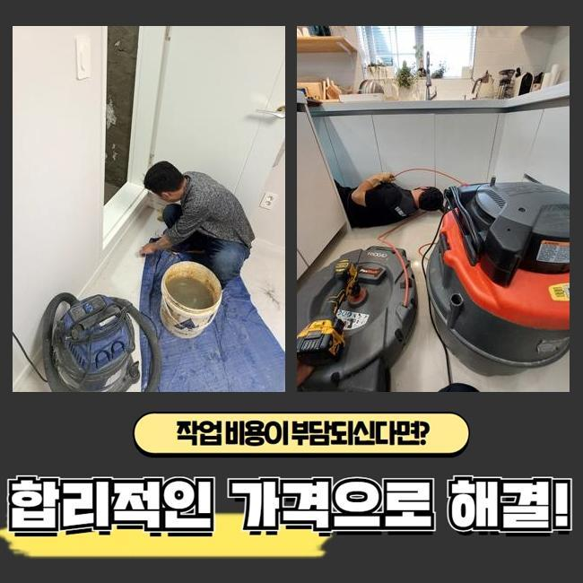
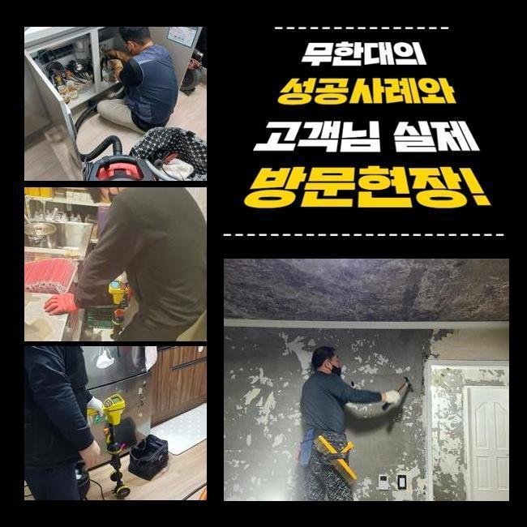
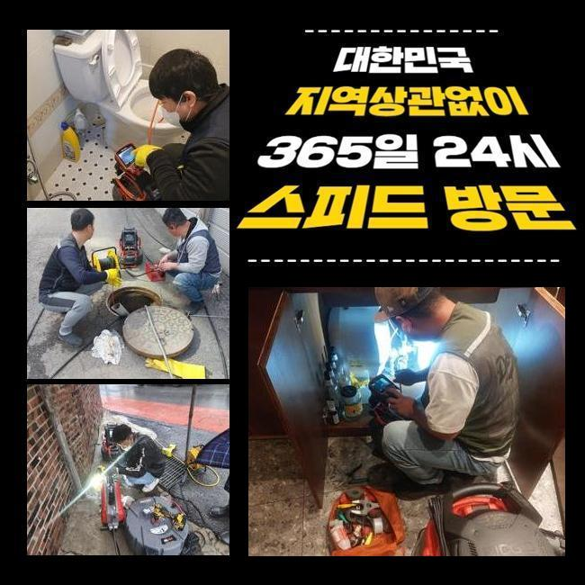
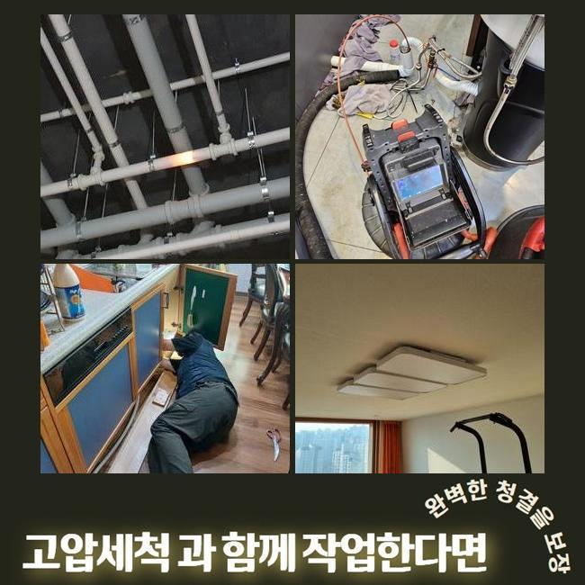
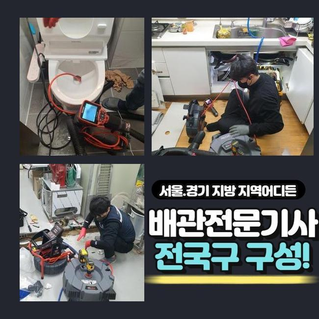
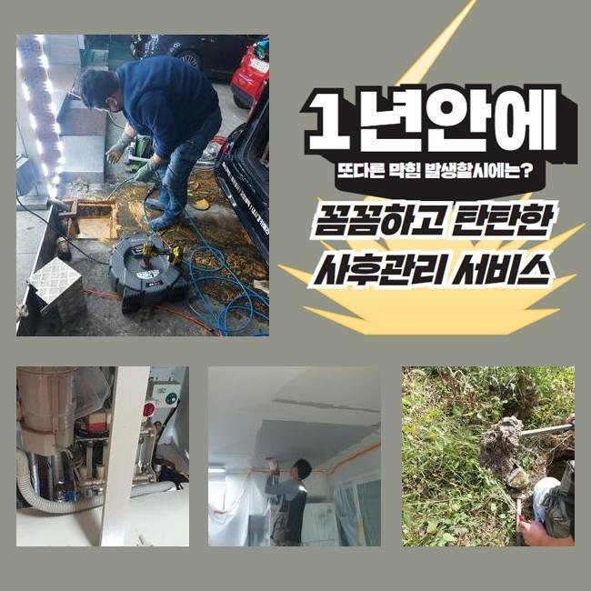

🏠 일산 정발산동씽크대뚫음 문봉동 맨홀막힘 출장설비
용인 싱크대막힘 전문 시공 후기

📋 작업 개요
- 위치: 용인
- 서비스 유형: 싱크대막힘, 하수구막힘, 배관막힘, 맨홀막힘, 집수정막힘, 뚫는업체, 배관청소, 고압세척
- 작업 일시: 2025. 1. 2. 18:55
- 업체명: 하수구수사대 (010-5615-2118)
🔍 문제 상황
일산 정발산동씽크대뚫음 문봉동 맨홀막힘 출장설비
며칠전 주택단지에 내방하여 바깥쪽에 있던 하수도를 고쳐드렸는데요
전문성이 두드러지는 장치들을 써서 안정적으로 청소를 했어요
물이 안빠지는 트러블이 나타나기 시작한건 저번주부터라고 하셨죠
관로들은 물빠짐이 이뤄지면서 자연스럽게 잔여물질들이 흐르는데 내측을 시작으로 해 지속적으로 축적되다가 통로들이 막히는데요
잔해들의 축적량과 덩어리가 진 상태면 점점 더 심해질 수 밖에 없어요
이물의 형태에 따라 전부 배출되는데에는 한계들이 존재합니다
해당 까닭들로 하수관이 막혀버리는 증상들이 야기된다면 스스로의 방식들로 해결이 보이지않는 사례들이 많죠
의뢰자가 혼자서 보통 시도해봄직 한 것은 클리너제품이나 과탄산소다를 쓰는건데요
증상들이 나타나고 기간이 도래하지않았을 경우엔 도전해볼 수 있는 조치겠지만 밖일 경우엔 개선이 안됩니다
외측에서 문제들이 생기면 혼자서 조치해주는게 불가능에 가까워 전문인력의 솔루션을 고려해보는게 가장 효과가 좋아요

🔎 원인 분석
💡 전문가 진단: 정밀 진단 장비를 사용하여 슬러지의 고착 여부를 판명하고 타격/세척 작업을 실시했습니다.
전문가들의 해결을 통하여 현장에서 어디부터 정체되었는지 명확한 까닭을 특정하는건 기본이며 자가적인 조치들이 아닌 확실히 잔해들을 제거하므로 오랫동안 하수관을 깨끗히 관리하도록 하고있어요
이번 물들이 안내려가는 또한 저희들은 적합한 기기를 활용하여 안정적으로 잔해까지 제거한 후 깊은부분까지 배수가 가능하도록 만들었습니다
살핀 결과로 바깥에 존재하는 하수관에서 증상이 생긴것이였고 조치하는것이 불가해보여 해결을 요청하셨습니다
저희들은 고객분의 시간이 가능하다라면 바로 찾아뵈어 해당 장소에서 일련의 과정들을 착수합니다
의뢰인분의 상담을 받은 결과로 트러블장소는 마당라인이였는데요
단독주택 외부에 존재하는 배수관이 막힌 탓에 비들이 내릴때 넘치게되는 상태라고 하셨어요
특히 우천상황에서는 돌멩이나 꽁초처럼 이런저런 이물들이 흐릅니다
수도를 이용하면 갑작스럽게 배수관으로 안흘러가는 현상이 많아졌다고 합니다
처음에는 고객분은 기간이 지나게되면 괜찮아 지겠지 하시고는 조치들을 방관하셨대요
예상치못한 시점에 해결이 늦었던 까닭인지 갑작스럽게 고이게되며 안내려갔다고 해요
발등에 불이 떨어져 며칠간의 시간들이 지나고서 빠지는 것을 목격하고 미뤄선 안되겠다 생각하시어 문의를 주신것이였죠

🔧 작업 과정
마당이 단독으로 있어서 타인들에게 불편들을 끼친 경우는 아니였지만 평상 시에 관리들이 요구되는 장소랍니다
빠른 출장이 이뤄지는 곳들이 잘 보이지 않아 난감하셨는데 저희전문진들은 바로 가능했기에 작업요청이 이루어진것인데요
저희업체는 시기막론하고 공휴일등에도 작업하며 언제든지 배관 관련 작업들을 하므로 의뢰를 받고서 찾아뵈어 이물제거에 착수했습니다
하수관은 어두워 육안으로 주시하기에는 한계들이 있습니다
각 관로에 내시경을 이용하여 살펴보기 어려운 위치에 오염물질들이 존재하는지 관찰하는데요
내시경으로 침전된 잔해물질들을 어떠한 방식들로 긁어내야되는지 정해진다면 합리적인 방법을 선택하죠
1차적으로 샤프트도구를 이용하고 집수정쪽은 고수압의 기계들을 이용해주기로 결정했습니다
샤프트기기는 몸체와 연결된 라인에 단단한 노커부속품이 부착되어있는데 이 노커부속품이 벽부분에 자리한 고착물을 분쇄시키는 장비랍니다
상황에 알맞는 기기를 운용시켜 안정적으로 결함들을 풀어냈습니다
작업시에 만일 작업에 뚫음이 불가하다면 금액청구는 일절 없을것이라 안내해요
저희업체는 애초에 고객님이 계신곳에 내방하는 경우 출장금액들을 받는 일 없이 찾아뵙기에 비용 관련 걱정을 내놓을 수 있게되고 뚫지못한다면 비용도 안받으니 편하게 맡겨보세요
작업 과정 중에 이렇다 할 성과없이 돌아가면서 출장금액들을 받는 절차는 절대 발생치않는다 보증합니다
내방한 장소는 바깥에 위치한 곳들로서 자갈 등도 빠진 상태였고 누적된 기름들과 엉키며 끈적한 상태와 더불어 돌처럼 굳어버렸죠
각 이물들끼리 뭉쳐져서 센터부터 배수공간들을 내주었죠
만성적인 고착이 발생해 간단하게 뚫리는건 아니고 깊은 지점들까지 청소시켜야 했으므로 집수시설부터 고수압의 장비들을 이용해야되는 상태가었습니다
고압노즐을 통해서 확실히 수습이 요구되었던 상태가었습니다
내시경장치를 쓰면서 깊숙한부분까지 작업해주었지만 통수들이 복구된 상태가 아니었습니다
그 이유는 흙들과 함께 기름성분이 구간을 따라서 넓은 범위에 누적되어 굳어버린 형태로 변모해서인데요


✅ 작업 완료
샤프트기기가 안닿는 지점으로서 고압세척이 요구되었어요
그후에 고압수청소로 기름 슬러지뭉치를 타격하며 깊숙히 흡착된 잔해들을 떨군 후 청소했는데요
안정적으로 청소해주니 조금씩 공간들이 생기고 통수들이 이루어지게 되었고 내측의 구간들도 배수절차가 가능했습니다
이 상황들을 의뢰인에게 설명드리고 해당 장소의 해결은 마무리됐습니다
재발될 일이 없게끔 사용하실 때 꾸준하게 관리책을 수행해보시고 만에하나 1년내에 반복하여 골치아프게한다면 저희전문진이 애프터서비스를 지원하니 심려치 마십시오!



⚠️ 주방 싱크대 배관 막힘 예방 수칙
- ✅ 기름기가 묻은 식기나 프라이팬은 설거지 전 키친타올로 반드시 기름때를 닦아내세요.
- ✅ 주기적으로 싱크대 개수대에 뜨거운 물을 가득 받아 한 번에 내려 배관 내부 기름을 씻어내세요.
- ✅ 배수구 거름망을 미세한 필터로 사용하시고 음식물 찌꺼기가 틈으로 새어 들지 않게 관리하세요.
- ✅ 베이킹소다와 식초를 뜨거운 물과 함께 일주일에 한 번씩 부어주면 배관 살균과 막힘 예방에 좋습니다.
💡 핵심 정리
- 확실한 장비 작업(내시경 점검 및 샤프트 스케일링)으로 원인을 뿌리 뽑습니다.
- 작업 후 1년 이내에 동일한 부위 재발 시 100% 무상 A/S 서비스를 보장합니다.
- 서울 · 경기 · 인천 전 지역에 24시간 언제든 긴급 출동할 수 있도록 항시 대기 중입니다.
❓ 자주 묻는 질문 (FAQ)
🚨 용인 싱크대막힘 문제로 고민이신가요?
정확한 원인 진단과 확실한 시공으로 재발 없는 해결을 약속드립니다.
24시간 긴급 출동 | 서울 · 경기 · 인천 전지역 | 1년 내 재발 시 무상 A/S